视障与低视力人群在独立出行中面临三大核心痛点：环境感知受限（难以判断盲道走向、前方障碍物）、过街判断困难（斑马线对准、红绿灯状态难以感知）、交互方式不自然（需要语音即时的信息获取与问答）。
本项目以低成本可穿戴硬件为切入点，设计并实现一套基于 ESP32 智能眼镜的视觉导航与语音交互系统：眼镜端负责音视频采集与语音播报，云端/本地 AI 服务负责视觉理解与自然语言交互，从而在有限算力与网络条件下，为使用者提供盲道导航、过街引导、障碍物避让、寻物引导、语音问答与盲道友好路线规划等能力。
系统采用「四层结构 + 端云协同」设计，各层职责如下：
| 层级 | 目录 | 主要作用 | 技术框架 |
|---|---|---|---|
| 设备端 | firmware/xiao_sense_ws_stream | 摄像头/麦克风采集、扬声器播放、Wi-Fi/UDP 通信 | Arduino ESP32、FreeRTOS、ESP32 Camera、I2S/PDM |
| 后端中转层 | server | 接收设备音视频流、维护设备状态、转发视觉任务、对接 DashScope Realtime | Go、Gin、Gorilla WebSocket |
| AI/视觉 Worker | python_worker | 盲道导航、斑马线/红绿灯检测、障碍物检测、寻物引导、ASR 与多模态问答、路线规划 | Python、FastAPI、OpenCV、PyTorch、Ultralytics、MediaPipe、DashScope |
| 前端展示层 | esp32-glass-front | 实时画面预览、设备状态、AI 状态、导航控制 | Vue 3、Vite、Ant Design Vue |
/api/status、/snapshot.jpg、WebSocket 等接口给前端 → Go 按配置将视频帧转发给 Python Worker 的 /api/vision/process、将控制命令转发给 /api/vision/control → Python Worker 调用视觉/大模型生成导航状态、避障提示与标注画面 → 导航语音经预生成 wav 或 AI 语音回传 Go 后端，再由 Go 经 UDP 下发 ESP32 扬声器播放。| 阶段 | 时间 | 关键节点 |
|---|---|---|
| 阶段一 | 6 月 3 日 — 6 月 30 日 | 需求调研、总体方案设计、技术选型 |
| 阶段二 | 7 月 1 日 — 7 月 31 日 | 四层架构详细设计、DDD 路线规划引擎设计、部署方案设计、开发环境搭建 |
| 阶段三 | 8 月 1 日 — 8 月 23 日 | 固件 / Go 后端 / Python Worker / 前端核心功能开发 |
| 阶段四 | 8 月 24 日 — 8 月 27 日 | 语音交互与高德导航集成、首次代码入库、障碍物上报与实时播报、语音模式联动 |
| 阶段五 | 8 月 29 日 — 8 月 30 日 | 数据集构建、YOLO 模型训练、障碍物检测模型切换 |
| 阶段六 | 8 月 30 日 — 8 月 31 日 | 系统联调、测试验证、流畅度优化、答辩材料整理 |
本阶段完成项目选题与可行性论证。针对视障人群出行的「环境感知、过街判断、自然交互」三大痛点，确定了「低成本可穿戴硬件 + 端云协同 AI」的技术路线：
本阶段将总体方案细化到可实施的工程结构，并完成开发环境准备：
本阶段并行推进四个子系统的开发：
NavigationMaster 状态机调度盲道导航、过街导航、寻物引导；盲道分割与偏移估计、斑马线/红绿灯检测、YOLOE 开放词汇障碍物检测、MediaPipe 手部关键点。本阶段为功能集中落地与版本密集迭代期，关键节点如下：
| 日期 | 关键节点 |
|---|---|
| 8 月 24 日 | 首次代码提交（大模型文件转 Git LFS 管理，忽略于普通提交）。 |
| 8 月 25 日 | 完成语音识别模块（DashScope Paraformer 实时 ASR）；加入语音播报、语音切换；语音导航上线。 |
| 8 月 26 日 | 新增障碍物上报功能、实时播报；修复 Python 运行路径；同步本地代码。 |
| 8 月 25 日 — 27 日 | 高德导航 + 盲道友好路线规划（DDD）：路线六维打分、障碍物时空聚合、逐段 TTS 播报、GPS 逐段导航触发；修复高德地理编码 city 参数、步行 polyline 解析、WGS-84→GCJ-02 坐标转换等系列问题。 |
| 8 月 27 日 | 语音模式联动（导盲↔高德导航）、「明眸」唤醒词门控、导航播报优先级高于聊天、聊天回声自问自答修复、人行道两轮车检测接入。 |
yolo CLI 训练；将障碍物检测由 YOLOE 分割模型（yoloe-11l-seg.pt）切换到检测模型 block.pt（8 类），提升推理速度与类别可解释性；解决 Windows 多进程 DataLoader 的 WinError 1455 页面文件问题（workers=0）。/stream.wav 浏览器链路），设备扬声器走 Go 下行不经过此链路导致不播报；改为将最终语音作为 guidanceText 返回，经 Go broadcastEvent 下发设备扬声器 + 前端事件。开发过程中遇到并解决了大量工程问题，以下为最具代表性的问题清单：
| 编号 | 问题现象 | 根因 | 解决方案 |
|---|---|---|---|
| 1 | 高德路线规划报 OVER_DIRECTION_RANGE | 地理编码未带 city 参数，常见地名解析到外省 | 地理编码强制携带 AMAP_CITY（枣庄） |
| 2 | 盲道覆盖率恒为 0、路段为空 | 高德步行接口 step 无 start/end_location，只有 polyline | 改为解析 polyline 生成路段 |
| 3 | GPS 实时播报永不触发 | 手机 GPS 为 WGS-84，高德路线为 GCJ-02，二者偏移约 537m，超过 80m 匹配阈值 | 新增 wgs84_to_gcj02()，匹配前先转换坐标系 |
| 4 | /api/gps/update 404 | 端点挂在错误 app 上，worker 主入口未 include 该路由 | 端点移入 route_endpoints.py 路由并挂载；异常统一返回 200 + success |
| 5 | 手机 GPS 到不了 Worker | 前端仍走 WebSocket 上行，而 Go 已改为 HTTP 端点 | 前端 sendGpsUpdate 改为 fetch /api/gps/update，对齐 Go HTTP 链路 |
| 6 | 语音 ASR/技能/千问全部失效 | 运行的是旧 xiao-stream.exe，未加载 .env 的 DASHSCOPE_API_KEY，s.ai==nil | 重新 go build 并以正确工作目录重启 |
| 7 | 前端「问答」按钮切不回千问 | setVoiceMode 对 qa 模式是 no-op（只认 chat/navigation） | qa → setVoiceMode("chat") 映射修正 |
| 8 | 导航播报「自问自答」回声循环 | 播报被 ESP32 麦克风拾取 → ASR 识别 → 千问再回答 | 三层防护：is_audio_playing() 检查本地播放 + 播报后宽限 ECHO_SUPPRESS_SECONDS + 文本回声守卫（SequenceMatcher 相似即忽略） |
| 9 | ebike 检测把 Worker 卡死 | 检测在事件循环内同步加载 YOLOE（约 10s）+ 推理阻塞 | 改为后台线程 + 防重入 + 缓存画框；默认 AIGLASS_EBIKE_ENABLED=0 |
| 10 | 「明眸」唤醒词无法切换模式 | 生僻词被 ASR 误识别（名模/明谋/明某等） | 新增 isWakeWordTranscript() 中文变体 + 拼音匹配 |
| 11 | 改完代码重启后不生效 | VS Code 编辑缓冲区与磁盘文件不一致，对既有文件的编辑丢失 | 改后强制落盘校验，必要时脚本直接写盘 |
| 12 | torch 导入报 WinError 1114 c10.dll | D:\ 根目录残留远古运行库 DLL 劫持依赖解析 | 将残留 DLL 改名为 *.disabled 回退 System32 新版 |
| 13 | yolo CLI 无法使用 ul:// 平台 | CLI 不读取 .env，ULTRALYTICS_API_KEY 未生效 | Key 写入 ultralytics settings.json 的 api_key 字段 |
| 14 | Windows 训练报 WinError 1455 页面文件太小 | 默认 8 个 DataLoader 子进程同时加载 CUDA DLL | 训练强制 workers=0，device=0 |
| 15 | 障碍物提示设备端不播报 | 语音只在 Python 内部 play_voice_text，未回传 Go 下行 | 改为 guidanceText 返回 → Go broadcastEvent 下发设备扬声器 |
测试执行时间：2026-08-31（本日志整理日复核）。
| 测试模块 | 通过 | 失败 | 说明 |
|---|---|---|---|
| Go 后端 internal/serverapp | ok | 0 | go test ./... 通过 |
| tests/test_route_scoring（路线打分引擎） | 7 | 0 | 权重归一化 / 单路线打分 / 盲道路线得分更高 / 排序 / 障碍物密度影响 / 盲道覆盖率 / 评分明细 |
| tests/test_obstacle_aggregator（障碍物聚合） | 9 | 0 | 热点创建 / 邻近合并 / 异类不合并 / 远距不合并 / 时间衰减 / 过期清理 / 严重度加权 / 邻近查询 / 清空 |
| tests/test_route_planning_service（路线规划集成） | 7 | 1 | 1 项失败（test_obstacle_report_affects_planning）为外部 DashScope 账号欠费（Arrearage）导致播报生成失败，非代码逻辑问题 |
| voice_session_manager（语音会话离线测试） | 6 | 0 | 6 个离线场景：导航切换 / ASR 打断 / 未唤醒 chat_locked / 明眸唤醒切聊天 / 导航优先 / 回声忽略 |
Arrearage（账号欠费）错误；更换/充值账号后该用例即可通过，打分与规划逻辑本身全部通过。| 测试场景 | 测试数据 |
|---|---|
| 盲道友好路线规划 | 起点：湖西景苑A区（117.519703, 34.854012）→ 终点：东湖公园（117.531722, 34.851625），约 1840 米，规划成功并返回 11 段 turn_by_turn |
| GPS 逐段导航 | 手机 GPS（WGS-84）→ GCJ-02 转换 → 80m 路段匹配 → 逐段播报「前方 50 米左转」等 |
| 语音导航指令 | 「导航到火车站」等口令，未指定起点时使用手机最近定位作为起点 |
| 语音模式联动 | 「导航到XX」= 高德导航 + 导盲模式双开；「明眸」= 切回千问聊天 |
| 模型文件 | 用途 |
|---|---|
| yolo-seg.pt | 盲道、斑马线等地面目标分割（导盲/过街） |
| yoloe-11l-seg.pt | YOLOE 开放词汇分割（障碍物/寻物） |
| block.pt | 障碍物检测模型（8 类，训练后替换 YOLOE 分割） |
| trafficlight.pt | 红绿灯状态检测（红/绿/倒计时） |
| shoppingbest5.pt | 寻物固定类别模型（历史资产） |
| hand_landmarker.task | MediaPipe 手部关键点（寻物手-物相对位置） |
以下为 Git 提交历史（提取自仓库 main 与 origin/dev 分支）：
| 日期 | 提交者 | 提交说明 |
|---|---|---|
| 2026-08-24 | mmm666-mmm-png | 首次提交，忽略大模型文件（Git LFS 管理） |
| 2026-08-25 | mmm666-mmm-png | Sync local project changes（同步本地工程） |
| 2026-08-25 | mmm666-mmm-png | 已加入语音播报 |
| 2026-08-25 | mmm666-mmm-png | 加入语音切换 |
| 2026-08-25 | mmm666-mmm-png | 完成语音识别模块 |
| 2026-08-26 | mmm666-mmm-png | 可进行语音导航 |
| 2026-08-26 | liugensheng | dev: sync local code changes（同步代码，排除模型文件） |
| 2026-08-26 | liugensheng | 添加障碍物上报功能 |
| 2026-08-26 | liugensheng | 添加实时播报 |
| 2026-08-26 | liugensheng | modify the python path（修正 Python 路径） |
| 2026-08-26 | mmm666-mmm-png | 2026.8.26（当日功能整合提交） |
| 2026-08-29 | mmm666-mmm-png | 8.28（模型训练与数据集阶段提交） |
| 成员 | 主要职责 |
|---|---|
| 苗源（项目负责人 / 主开发） | 总体架构设计、Python Worker 视觉导航与语音交互、高德导航与盲道友好路线规划（DDD）、语音识别/播报/切换、前后端联调、模型训练与数据集构建 |
| 刘根生（协作开发） | 障碍物上报、实时播报、Python 运行路径与部署环境修复 |
| 成员（视频剪辑） | 项目宣传/演示视频的拍摄与剪辑 |
| 成员（开发日志 / PPT） | 开发日志编写与答辩 PPT 制作 |
| 成员（硬件调试） | ESP32 硬件与设备端调试（固件烧录、音视频采集、扬声器播放、设备联调） |
本项目在约三个月周期内完成了从需求调研、方案设计到系统实现、模型训练与测试验证的完整闭环，实现了 ESP32 智能眼镜在盲道导航、过街引导、障碍物避让、寻物引导、语音交互与盲道友好路线规划方面的核心能力，并通过「ESP32 端侧采集 + Go 实时中转 + Python 多模型视觉导航 + DashScope/Qwen 语音多模态 + Vue 前端监控」的架构落地了端云协同方案。
后续优化方向：
首先展示本系统独立绘制的系统总体架构图（图 A-0），随后为项目答辩 PPT（14 页）的导出截图，涵盖背景意义、需求目标、系统架构、关键实现、测试验证与创新总结，作为方案设计与系统实现的佐证材料。
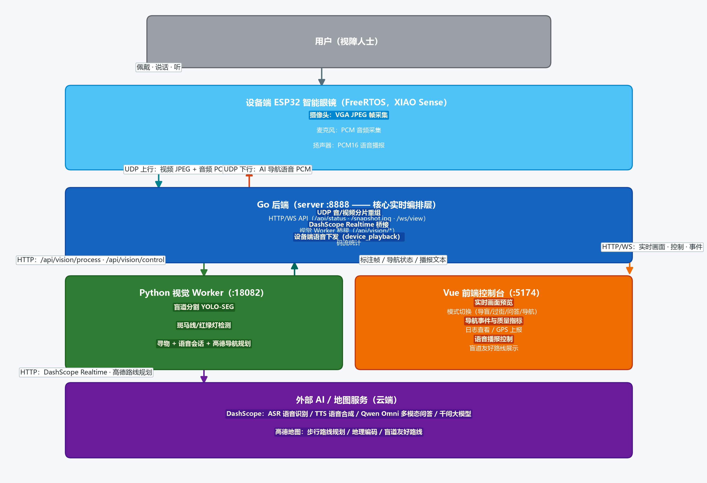
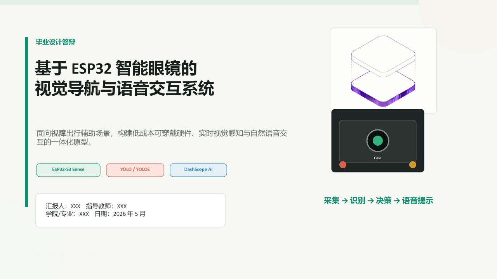
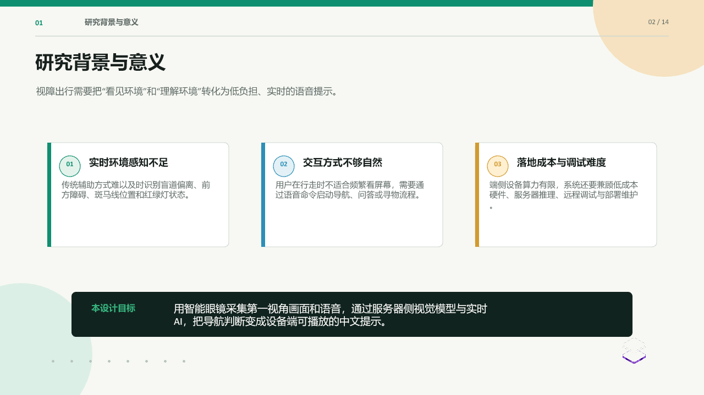
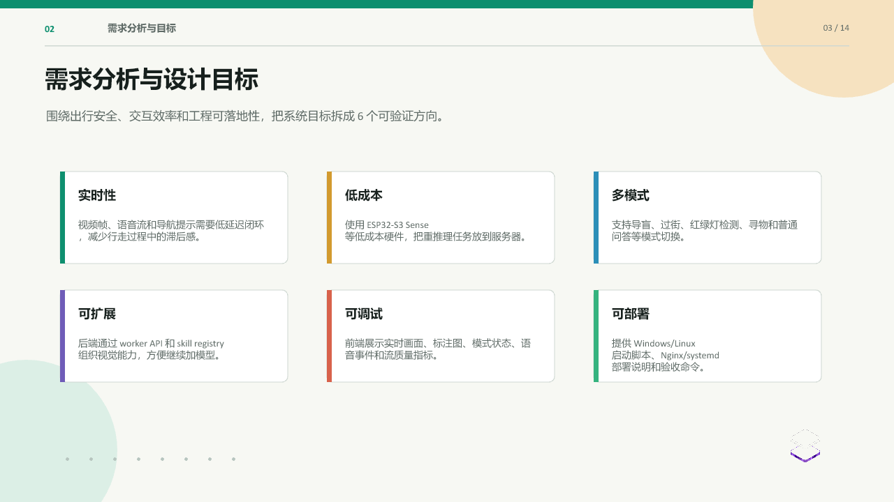
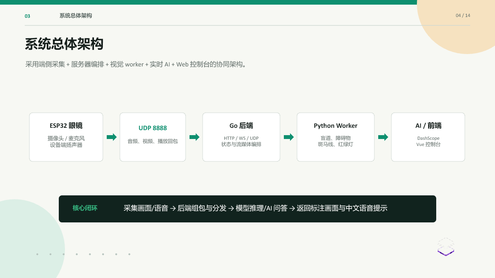
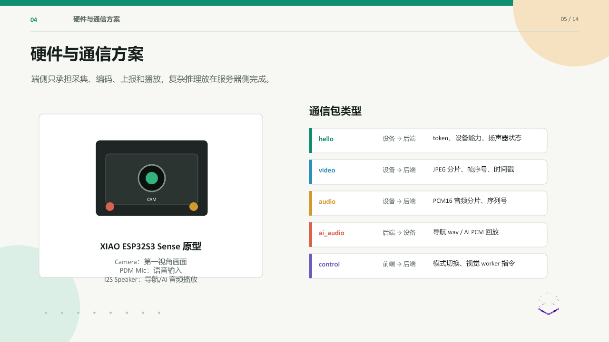
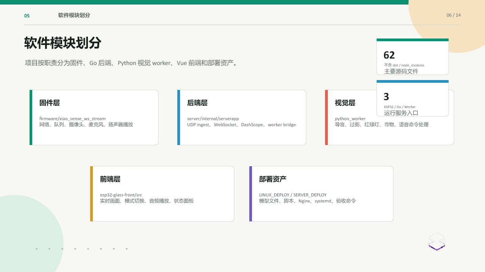
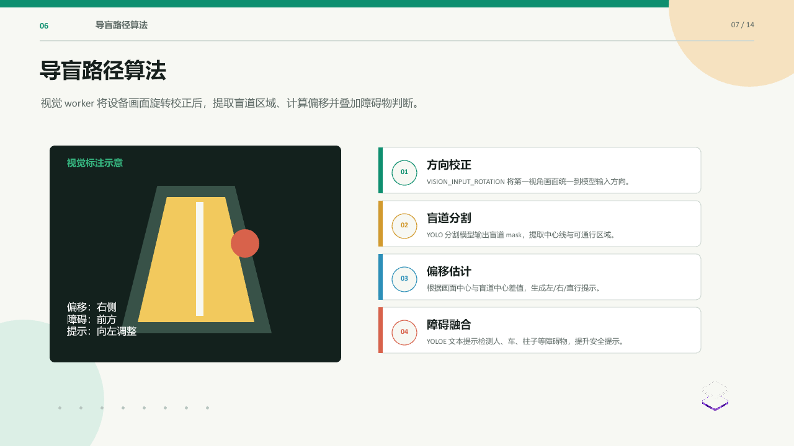
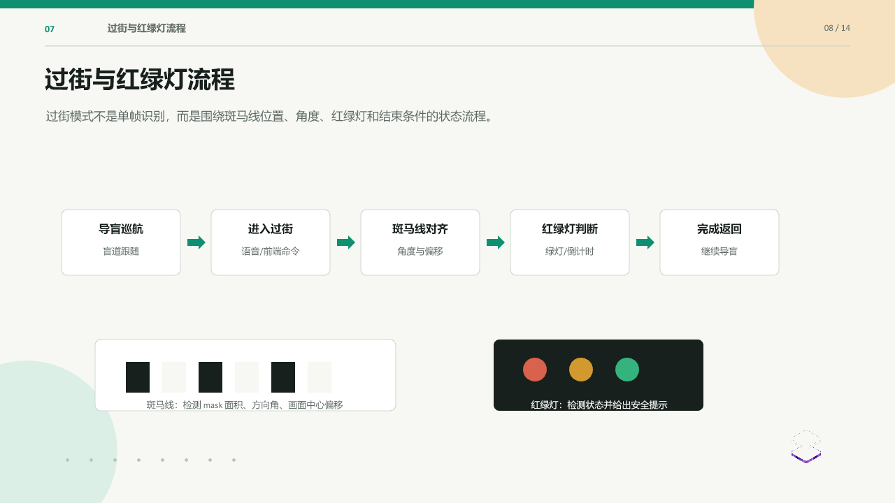
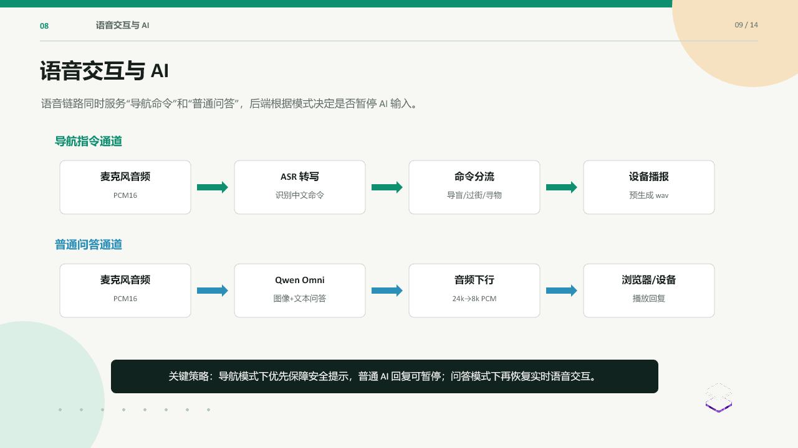
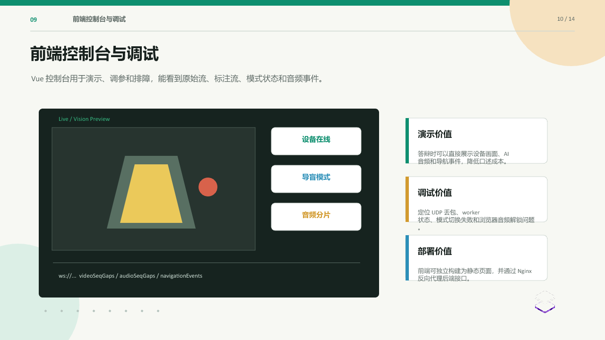
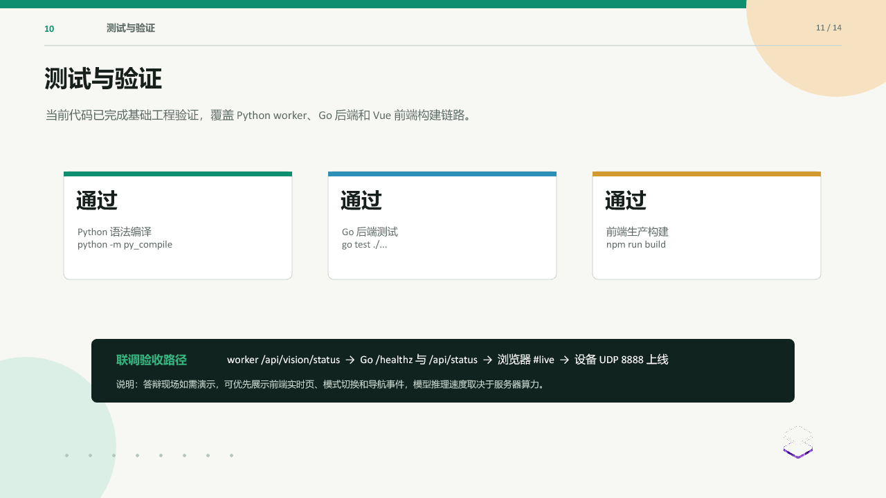
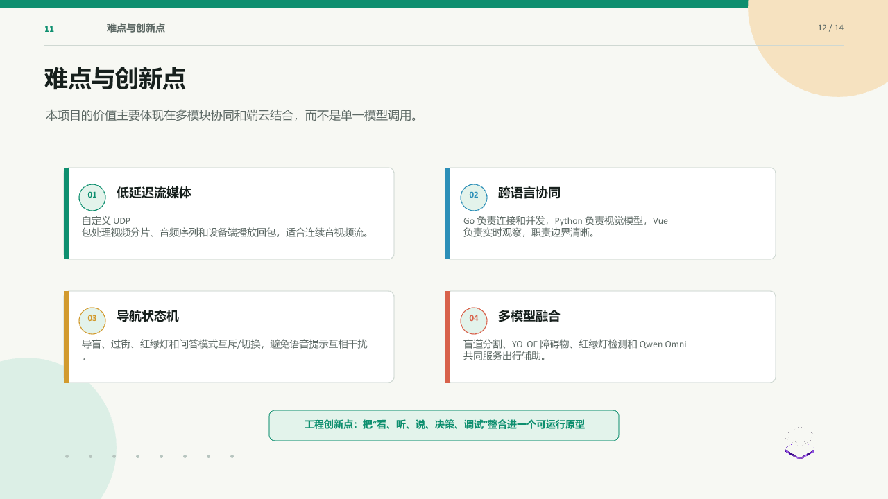
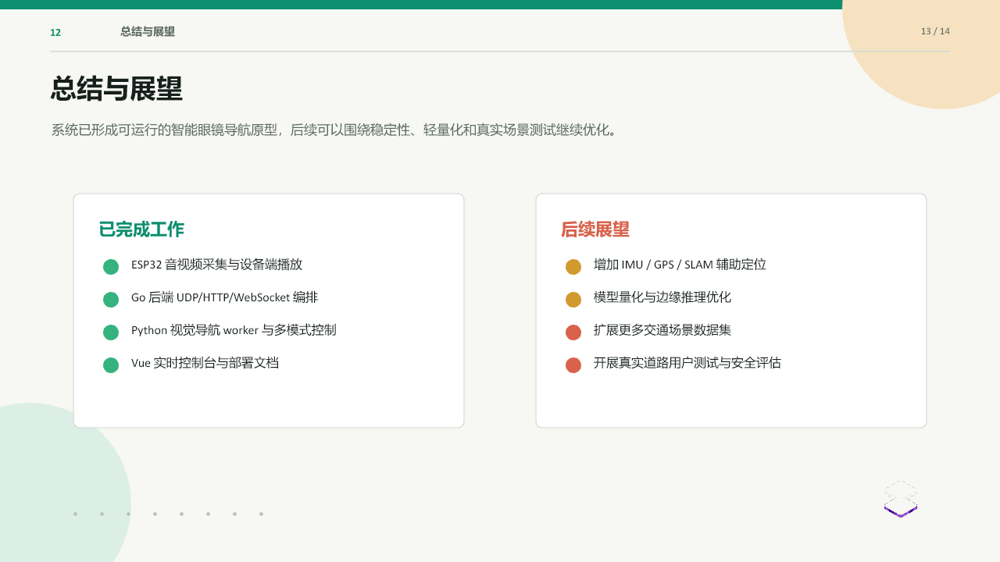
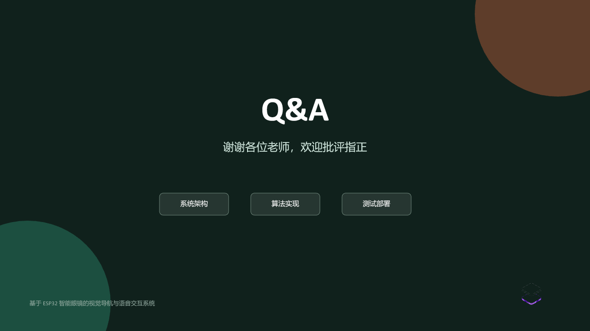